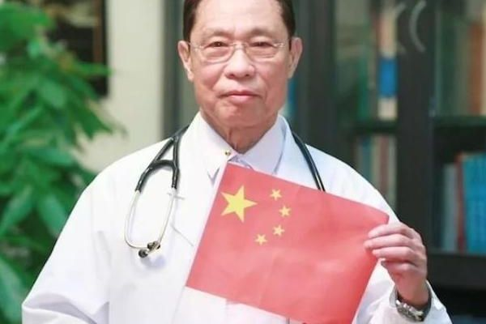

钟南山：中共党员，中国工程院院士，著名呼吸病学专家，中国抗击非典型肺炎的领军人物。17年前的非典，他奋战在抗击第一线。自疫情发生以来，他给出的建议是不要去武汉，但84岁高龄的他却义无反顾的赶赴武汉防疫最前线。钟南山院士以其战士的勇敢无畏、学者的铮铮风骨和悬壶济世的仁心仁术，挺身而出，冒死犯险。他值得我们永远的铭记和敬重!
颁奖词： 国难当头，总有勇士勇往无前；防疫战场，总有国士挺身而出。2003年，突如其来的非典肆虐中国大地，钟南山院士临危受命，带领中国人民走出“白色恐怖”的泥潭，战胜非典。2019年，新型冠状病毒再次蔓延全国，84岁高龄的钟南山逆行冲向武汉，再次成为中国防疫战场的坚实后盾！他是一名医生，一名院士，更是人们心中永远感恩的防疫“符号”！挽救生命 无休无眠，从非典到新冠，从广州到武汉，哪里有疫情，哪里就有他的身影84岁！像48岁的将军，防疫战争，他是最强的杀毒剂！，武汉战场，他是最伟大的英雄！
钟南山院士还额外提到，其实一直以来我们对于新冠病毒的治疗都存在一种误区，那就是想尽一切办法去治愈新冠病毒。但实际上作为一种潜伏期短、病毒载量的传染性病毒来说，新冠疫情的彻底治愈并不是一件容易的事情，倒不是说现有的医学条件无法将疫情完全扼杀，只是这需要很长一段时间。那么在这期间难道就让我们活在恐惧之中吗？当然不是！对此钟南山院士给出观点：针对德尔塔病毒最关键的不是治疗，而是去预防。
其实从当下我国政府作出的种种措施也能看出来，佩戴口罩、避免聚集，这都是从预防的角度来保证我们的安全，至于新冠病毒什么时候能够彻底治愈？这仍然是一个未知的话题；可是在两位专家的谈话中我们可以有底气的表示：中国对新冠病毒的全面预防马上就要实现了，对此政府已经决定在2022年上半年开始与他国进行互通，可能有很多海外华人已经迫不及待想要回到自己的祖国，但当时碍于疫情的影响很难达到这个目的，可如今形势却大不一样了。
在抓紧安排国内疫苗接种的同时，中国也没有忘记对他国提供疫苗的援助。虽然在中国国内可能马上就要实现了群体免疫，但世界上仍然有很多国家因经济落后而无法满足疫苗的接种工作，这些都是中国帮衬的对象。在抓紧安排国内疫苗接种的同时，中国也没有忘记对他国提供疫苗的援助。虽然在中国国内可能马上就要实现了群体免疫，但世界上仍然有很多国家因经济落后而无法满足疫苗的接种工作，这些都是中国帮衬的对象。
这对于我们来说确实是一个很好的消息，以往大家被疫情折磨连出门都要三思，毕竟外面的风险依然存在，谁也不敢保证是否会因乱走而感染上新冠病毒。但眼下国内疫苗接种工作即将达到80%的普及效果，届时不管是别人从国外回来也好，我们出国旅游也都不用担心了。
版权所有:©广州松田学院21应用高技班